An Explainable Token Stacking
Meta Learner with Self-Attention
for Multi-Class Skin Cancer
Classification
Mohammed Moin Uddin · C221029
Mir Md. Ejajul Hoque Eju · C220136
Md. Minhajul Islam Rahat · C220138
Mr. Mohammad Mahadi Hassan
Associate Professor, CSE
International Islamic University Chittagong
Why does this matter?
The world still faces a difficult medical imaging problem: skin lesions often look similar, but the diagnosis behind them can be very different.
Dermoscopic images can hide important cues behind hair, shadows, and texture noise. At the same time, class imbalance makes some lesion types harder to recognize than others, which raises the risk of misclassification.
Learning the right visual cues is hard when lesions overlap in appearance, data is unevenly distributed, and the model must remain reliable in a clinical setting.
Visual similarity
Many lesion types share overlapping color, shape, and texture patterns.
Uneven data
Rare lesions are easy to overlook when the training set is not balanced.
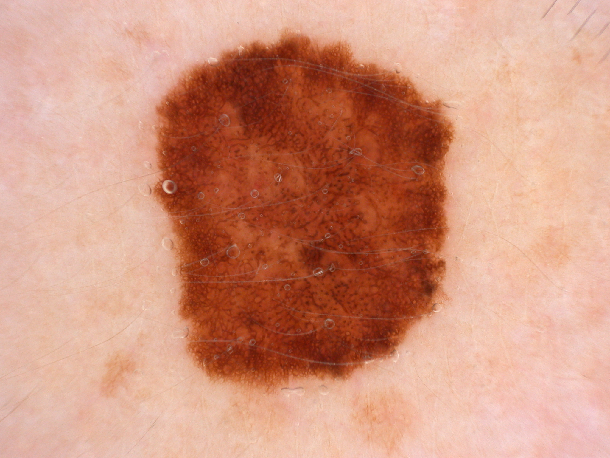

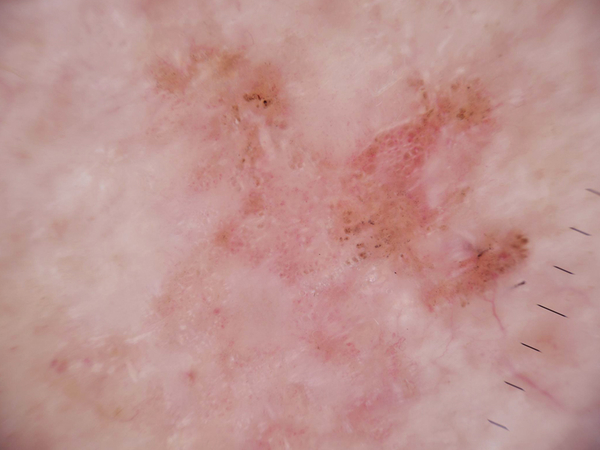
Even different lesion types can appear deceptively close, so the model has to learn subtle discriminative cues.
The crucial cancer classes
These lesion categories are clinically important because many of them overlap in appearance, yet their risk profiles and treatment needs are very different.
Irregular borders, asymmetry, mixed colors, and fast change.
Pearly or transparent bump with visible vessels and slow growth.
Scaly red patch, dome-like growth, or a non-healing sore.
Brown or black waxy lesion with a rough, stuck-on look.
Flat or raised pasted-on lesion with a lighter, scaly surface.
Small firm nodule that often dimples when pinched.
Rough precancerous patch caused by long-term sun damage.
Red or purple blood-vessel growth with a distinct color pattern.
Symmetrical mole with uniform color and stable appearance.
What the literature tells us
We reviewed recent skin cancer classification studies across five thematic streams. Each stream reveals both progress and persistent gaps.
CNN & Transfer Learning
Xception, VGG16, DenseNet169 achieve 84–91% accuracy on ISIC via ImageNet pre-training. Deeper networks outperform older architectures for representation learning.
High accuracy · class-level gaps remainMulticlass Classification
XceptionNet and ResNet50 report 78–82% on multiclass tasks — well below binary results. Harder decision boundaries and severe class imbalance are to blame.
Accuracy drops sharply beyond 2 classesEnsemble Learning
Multi-model ensembles range from 78% (VGG16) to 97% (ResNet101 + Self-Attention). Feature diversity across architectures improves stability and reduces per-class variance.
Wide range · model selection is criticalTransformers & Hybrids
ViT + GNN hybrid reaches 95%; self-supervised transformers hit 96.48%. But both demand large datasets and heavy compute — not feasible for modest medical collections.
High ceiling · data-hungryExplainable AI (XAI)
Grad-CAM baselines show 73–77% accuracy — interpretability tools alone don't lift performance. Yet clinical adoption requires both accuracy and visual trust.
Interpretable · but not always accurateWhat others have built
| Approach | Reported Accuracy | Critical Limitation |
|---|---|---|
| Xception (binary) | 90.15% | Limited to 2-class problems |
| Xception (multi-class) | 90.61% | Drops sharply in 9-class setting |
| Multi-model ensemble | 78%–97% | Wide variance, unreliable |
| ViT + GNN hybrid | 95% | Requires huge datasets |
| CNN + PSO optimization | 98.5% / 86.1% | Poor cross-dataset generalization |
| Pure Transformer | 96.48% | Heavy compute, data-hungry |
| Grad-CAM XAI baseline | 73%–77% | Interpretable but inaccurate |
Most works trade accuracy for interpretability — or vice versa. Few do both.
The five gaps we identified
Single-model instability
One model cannot excel across all 9 lesion classes simultaneously.
Class imbalance bias
Minority classes (like melanoma) get misclassified — dangerous in medicine.
Stability + interpretability rarely coexist
Most works do one or the other. We do both.
Inconsistent Grad-CAM heatmaps
Visualizations are sometimes meaningless or off-target.
Generalization fails across datasets
Models tuned for ISIC don't transfer well to HAM10000.
What we set out to answer
Research Questions
- Can ensemble learning beat individual CNNs on 9-class skin lesion classification?
- Can self-attention over base model predictions ("tokens") improve over traditional stacking?
- Can data augmentation effectively address class imbalance?
- Does CNN+ViT hybrid outperform CNN ensembles on moderate datasets?
- Can Grad-CAM provide trustworthy explanations for clinical use?
Research Objectives
- Implement & compare 7 pre-trained CNNs via transfer learning
- Address class imbalance with augmentation (2,500/class)
- Build progressive ensembles: Soft Voting → Stacking → Token Stacking + Attention
- Compare against CNN+ViT hybrid model
- Integrate Grad-CAM for visual interpretability
- Evaluate with 6 metrics including Cohen's Kappa
System Architecture
ISIC Dataset
80%
20%
20%
Skin
Cancer
The ISIC dataset · before & after
Before Augmentation
2,357 images · severely imbalanced
| Vascular lesion | 142 |
| Actinic keratosis | 130 |
| Nevus | 373 |
| Pigmented benign keratosis | 478 |
| Melanoma | 454 |
| Squamous cell carcinoma | 184 |
| Basal cell carcinoma | 392 |
| Seborrheic keratosis | 93 ⚠ |
| Dermatofibroma | 111 |
After Augmentation
22,500 images · perfectly balanced
| All 9 classes | 2,500 each |
Final split
Techniques: rotation · zoom · shift · shear · horizontal flip
How we trained it
Training Configuration
| Epochs | 100 |
| Batch size | 32 |
| Optimizer | SGD |
| Learning rate | 0.001 |
| Momentum | 0.9 |
| Loss | Categorical Cross-Entropy |
| LR scheduler | ReduceLROnPlateau |
Inference Algorithm
// Token Stacking Meta Learner INPUT: image x, models M₁, M₂ OUTPUT: predicted class ĉ 1. p₁ ← M₁(x) // (9,) 2. p₂ ← M₂(x) // (9,) 3. T ← Stack(p₁, p₂) // (2, 9) 4. T' ← MHAttention(T,T,T) 5. T'' ← LayerNorm(T') 6. f ← Flatten(T'') 7. h ← Dense(32, ReLU)(f) 8. y ← Softmax(Dense(9))(h) 9. ĉ ← argmax(y) RETURN ĉ
DenseNet201 — 91.91% Test Accuracy
Training vs Validation Accuracy
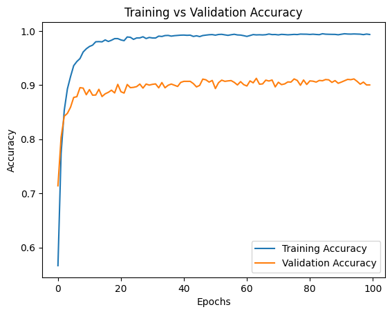
Confusion Matrix
Sample Predictions
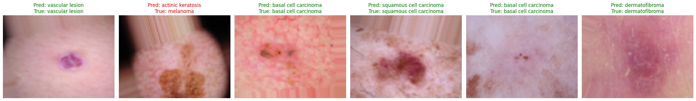
VGG16 — 90.84% Test Accuracy
Training vs Validation Accuracy
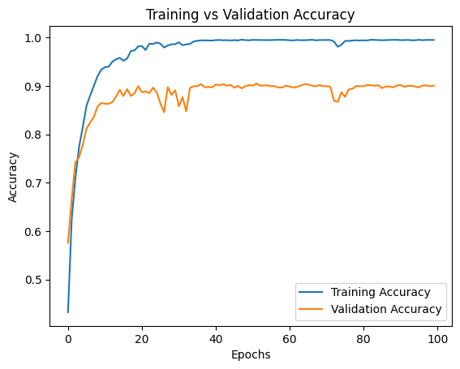
Confusion Matrix
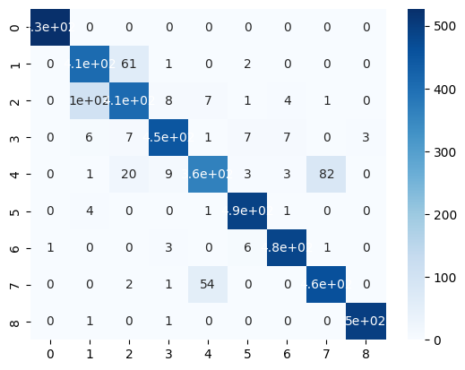
Sample Predictions
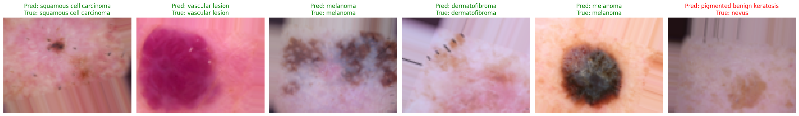
VGG19 — 90.44% Test Accuracy
Training vs Validation Accuracy
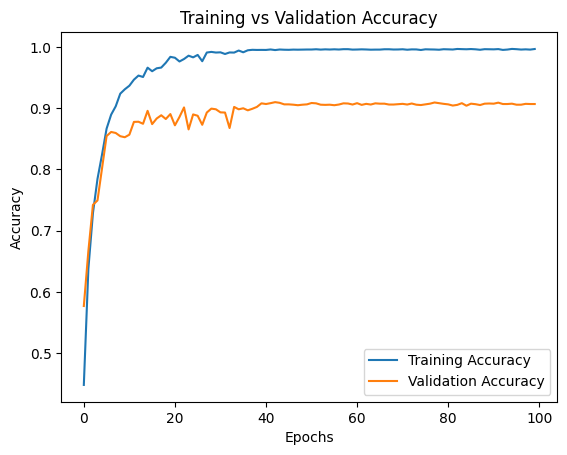
Confusion Matrix
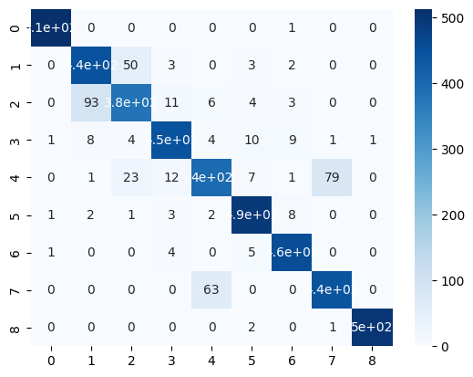
Sample Predictions
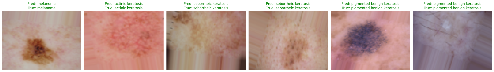
Individual CNN performance
| Model | Accuracy | Precision | Recall | F1-Score | Kappa |
|---|---|---|---|---|---|
| DenseNet201 ⭐ | 91.91% | 91.90% | 91.87% | 91.84% | 0.9090 |
| VGG16 ⭐ | 90.84% | 90.83% | 90.83% | 90.76% | 0.8970 |
| VGG19 | 90.44% | 90.45% | 90.52% | 90.42% | 0.8925 |
| Xception | 88.60% | 88.71% | 88.53% | 88.41% | 0.8717 |
| InceptionV3 | 88.33% | 88.51% | 88.43% | 88.43% | 0.8687 |
| ResNet50 | 87.87% | 87.77% | 87.82% | 87.67% | 0.8635 |
| MobileNetV2 | 86.71% | 86.80% | 86.67% | 86.41% | 0.8505 |
⭐ DenseNet201 and VGG16 selected as base learners. Their architectural diversity — dense connectivity vs uniform convolutions — maximizes feature complementarity.
Soft Voting Ensemble
How It Works
Each base model outputs a probability vector over 9 classes. Soft voting averages these vectors to produce the final prediction — no learning required.
Drawback: both models receive equal weight regardless of per-class confidence.
Per-Class Recall
Stacked Meta Learner
How It Works
Base model probability outputs are concatenated into meta-features. A small neural network (meta-learner) is then trained on these meta-features to learn the optimal combination rule.
Improvement: learns a non-linear combination — but treats all class positions equally.
Per-Class Recall
Token Stacking Meta Learner — Architecture
Image
Block 1
Block 2
Block 3
Block 4
Avg Pool
Vector
(Softmax
output)
Shape: (34)
Image
64
128
256
512
Layer
Vector
(Softmax
output)
Shape: (34)
(Token Formation)
Shape: (2, 34)
Token Stacking + Self-Attention — Results
Training vs Validation Accuracy
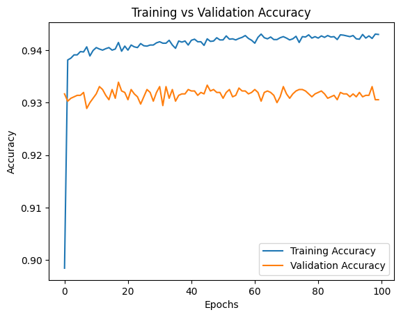
Normalized Confusion Matrix
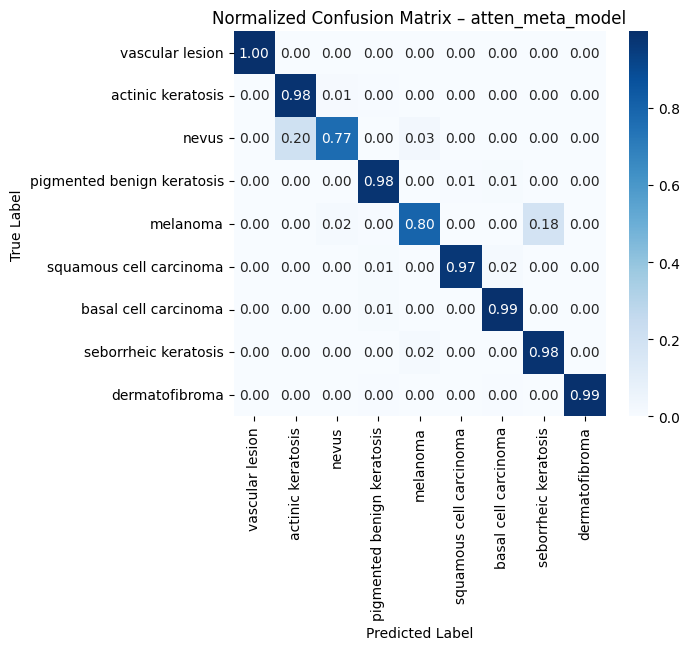
ROC Curves (Micro AUC 0.997)
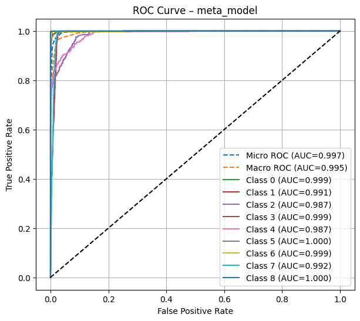
Ensemble showdown
Proposed Model Highlights
Can the model explain itself?
We applied Grad-CAM to verify that our trained model focuses on clinically relevant skin lesion features — not background noise or artefacts.
Gradient-weighted Class Activation Maps — heatmap overlays on test images
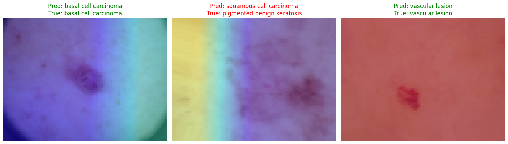
Warmer regions indicate higher gradient activation. The model consistently highlights the lesion boundary and pigmentation texture — not surrounding healthy skin.
Why the ViT hybrid underperformed
86.29%
CNN+ViT hybrid accuracy — worst among all models tested
Data Hunger
Vision Transformers need millions of images to learn global feature relationships. Our 22,500 augmented images are sufficient for CNNs but insufficient for ViTs.
Lack of Inductive Bias
CNNs have built-in priors (translation invariance, locality) that suit medical images. ViTs must learn these from scratch.
Increased Complexity
Hybrid models add parameters without adding generalization. Subtle inter-class differences (melanoma vs benign keratosis) require more, not less, regularization.
Takeaway: For moderate-sized medical datasets, smarter combinations of CNNs beat bigger transformer-based architectures.
The core equations
Computes how much each token influences others.
Multiple attention views in parallel.
Probability vectors stacked as separate tokens.
Final probability over 9 classes.
Optimization target during training.
Heatmap weighted by gradient importance.
What we contribute
🔬 Technical
- Comprehensive evaluation of 7 CNNs + 3 ensembles + 1 hybrid
- Novel Token Stacking with Self-Attention framework
- State-of-the-art 94.16% on 9-class ISIC classification
- Architecture-agnostic methodology — extends to any medical task
🏥 Clinical
- Aids early melanoma detection — saves lives
- Provides AI second-opinion to reduce diagnostic errors
- Democratizes access in rural / resource-limited settings
- Grad-CAM enables clinician verification → builds trust
📚 Academic
- Demonstrates attention-based stacking > traditional stacking
- Empirically validates CNN superiority on moderate datasets
- Reusable framework for future medical imaging research
- Honest documentation of limitations & failure modes
Limitations & where we go next
Acknowledged Limitations
- Single dataset. Generalization to HAM10000 not yet tested.
- Higher compute cost than individual CNNs.
- Grad-CAM localization isn't perfect — sometimes off-target.
- No clinical validation conducted yet.
- Closed-set classification — can't detect new lesion types.
Future Directions
- Cross-dataset validation on HAM10000
- Add third base learner with different inductive biases
- Test on EfficientNet, ConvNeXt, Swin Transformer
- Lightweight ensemble for real-time mobile deployment
- Clinical validation with partner hospitals
- Out-of-distribution detection for open-set recognition
Thank you.
"For moderate-sized medical datasets, the future isn't bigger models — it's smarter combinations of existing ones."
Mohammed Moin Uddin · Mir Md. Ejajul Hoque Eju · Md. Minhajul Islam Rahat
Supervised by Mr. Mohammad Mahadi Hassan · CSE · IIUC
We welcome your questions.